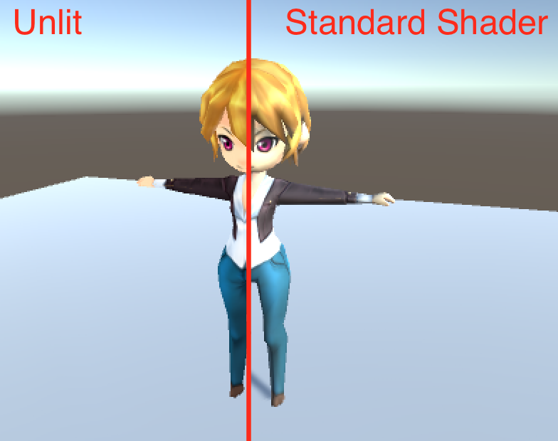

今つくってるやつ x 2
1.ShaderKitchen
逆引きシェーダー辞典。
Unityに限らないけど、シェーダーのコードの意味やどんな見た目になるのかを一覧 + 深追いできるサイト。の、プロトタイプ。
プロトタイプのURL
https://dl.dropboxusercontent.com/u/36583594/outsource/UnidonWeb/index.html
・シェーダーを見た目で「あ、これいいな」から選んで、
・そのシェーダーのコードを、マウスオーバーとかクリックで深追い = 意味とか効果の勉強ができて
・用意されてるサンプルと同じUnityPackageのDLができるんで、手元でも同じ見た目のものが動かせる。
・リアルタイムにコードを変えて云々はしない。ただしクリックしたコードが描画のどこに影響するかはドローバッファのアニメーションで見せる

・(実装中)Unityで作ってるので、赤い線を左右に自分で動かしつつ、シェーダーの効果を見比べることができる。

ほか
・すべてUnity製
Unityのプロジェクトを自動的に分解してWebサイトっぽいデータ構成(index + AssetBundle x Scene)にするツールを作った。
Unidon
https://github.com/sassembla/Unidon
このプロジェクト(ShaderKitchen)自体もオープンソース
ShaderKitchen
https://github.com/sassembla/ShaderKitchen
その2 Automatine
タイムラインAI作成ツール 。
Sequencerとは違った概念で、タイムライン上に状態とかコードを置いて反復できるようにするやつ。
モチベ
Automatineは、タイムライン上に状態やスクリプトを配置し実行できるユーティリティ。特に次のようなことを簡単に管理するのを目指している。
こんな見た目

ざっくり言うと
ボタンを押す -> 3frame後にキャラが一番近い敵に向かってダッシュ開始
-> 敵めがけてダッシュ(可変フレーム)
-> 十分近くに行ったのでダッシュ解除、惰性のブレーキモーションを10frame
-> 攻撃モーション
-> アニメーションにあわせた待ちフレーム後にダメージ処理
-> 惰性の5frame
-> 最初いた場所を向いて、ダッシュ20frame
-> 元いた位置にたどり着いたら、向きを変えて待機モーションにして、行動終了
みたいな「N frame後に～して、その次は、、」がいっぱいあるコードを手で書きたくないので作った。
Sequencerとの違い
Unity5.4以降でSeqencer(Timeline tool)が入るが、それとは異なる用途を目指している。
|
やりたいこと |
Sequencer |
Automatine |
|
Assetをタイムラインにセット |
✔︎ |
- |
|
シーン単位でタイムライン実行 |
✔︎ |
✔︎ |
|
キャラ単位でタイムライン実行 |
difficult |
✔︎ |
|
一部の動作を繰り返して実行 |
- |
✔︎ |
|
状態の保持、管理 |
not suite |
✔︎ |
|
状態遷移の定義、実行 |
- |
✔︎ |
|
スクリプトの実行 |
✔︎ |
✔︎ |
|
スクリプトの継続実行 |
? |
✔︎ |
|
AIの実装 |
not aimed |
✔︎ |
Sequencerがシネマティックなシーケンスを制御するのを主なMotivationにしているのに対し、
Automatineはより細かい粒度での「キャラクターやオブジェクトの状態を管理し、スクリプトの実行と継続動作」を実現することを主な目的としている。
ちなみにAutomatineは実行コード or 実行データ 両方を出力することができる。
特徴
すでに実装されている大きな特徴として次のようなものがある。
実行時のGUIとコード例
たとえばで、格ゲーのキックみたいなのを作ろうとすると、こんな感じの見た目で、
・4f目から移動開始、19f目まで移動
・22f目から25f目まで攻撃判定
・0fから39fまでずっとダメージ受ける可能性があり
・22fから31fまではカウンターヒットを受ける可能性があり
・26fから36fまででキックの戻りアクション
みたいな複雑なことができる。

で、実際にゲーム側で使う時のコードは以下のような感じ。
定義
using UnityEngine;
using Automatine;
public class Attacker : MonoBehaviour {
Auto<string, bool> auto;
実行
int frame = 0;
void Start () {
auto = new Kick<string, bool>(frame, "start~!!");
}
void Update () {
auto.Update(frame, true);
frame++;
}
こんな感じのコードを書くと、動く。
で、実行しているautoについて、状態を取得することができる。
状態を取得
void Update () {
if (auto.ShouldFalldown(frame)) {
Debug.LogError("Kickが終わったので何かに切り替える:" + frame);
}
if (auto.Contains(AutoConditions.Damage.Lv1)) {
Debug.LogError("自分が攻撃を出してる瞬間、この時相手は、、？っていうのが書けるブロック:" + frame);
}
if (auto.Contains(AutoConditions.Damaged.CounterHit)) {
Debug.LogError("カウンターヒットになる状態:" + frame);
}
if (auto.Contains(AutoConditions.Damaged.Normal)) {
Debug.LogError("通常やられになる状態:" + frame);
}
auto.Update(frame, true);
frame++;
みたいな感じで書ける。
おまけで、
・frameを+しないと動かない
・frameの+が1より多いと、その回数ちゃんと回る = 早送り可能
・定義時にセットしてる型は自分で勝手に決めていいやつで、GUIにアタッチしたコードに渡る
という。
実行時のログはこんな感じ
通常やられになる状態:0
通常やられになる状態:1
通常やられになる状態:2
通常やられになる状態:3
通常やられになる状態:4
通常やられになる状態:5
通常やられになる状態:6
通常やられになる状態:7
通常やられになる状態:8
通常やられになる状態:9
通常やられになる状態:10
通常やられになる状態:11
通常やられになる状態:12
通常やられになる状態:13
通常やられになる状態:14
通常やられになる状態:15
通常やられになる状態:16
通常やられになる状態:17
通常やられになる状態:18
通常やられになる状態:19
通常やられになる状態:20
通常やられになる状態:21
通常やられになる状態:22
自分が攻撃を出してる瞬間、この時相手は、、？っていうのが書けるブロック:23
カウンターヒットになる状態:23
自分が攻撃を出してる瞬間、この時相手は、、？っていうのが書けるブロック:24
カウンターヒットになる状態:24
自分が攻撃を出してる瞬間、この時相手は、、？っていうのが書けるブロック:25
カウンターヒットになる状態:25
自分が攻撃を出してる瞬間、この時相手は、、？っていうのが書けるブロック:26
カウンターヒットになる状態:26
カウンターヒットになる状態:27
カウンターヒットになる状態:28
カウンターヒットになる状態:29
カウンターヒットになる状態:30
カウンターヒットになる状態:31
カウンターヒットになる状態:32
通常やられになる状態:33
通常やられになる状態:34
通常やられになる状態:35
通常やられになる状態:36
通常やられになる状態:37
通常やられになる状態:38
通常やられになる状態:39
Kickが終わったので何かに切り替える:40
通常やられになる状態:40
Kickが終わったので何かに切り替える:41
Kickが終わったので何かに切り替える:42
Kickが終わったので何かに切り替える:43
...